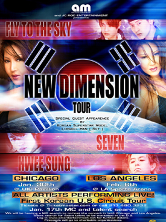

|
 |
Q & A with Playboy Sensation Lorabel Rey
Ktown213: So,
Lorabel, like we ask all our other models, please give us your 30 second
intro.
Lorabel Rey: Okay, intro, huh? I'm
Lorabel, Korean, and a 26 year old model who's been in the scene for
about 5-6 years now. I enjoy it very much because I get to travel to
exotic places of the world and cultivate myself. I modeled for Playboy,
which then opened up many other doors and opportunities thereafter.
But I've always stayed true to my roots, where I came from, my culture
and background. I'm very proud to be Korean and to represent our nation.
My most exciting and highly aniticipating gig is that I'll be the M.C.
for New Dimensions Tour, a Korean Concert with highly recognized Korean
Artists coming straight from Korea to tour in the U.S., mainly Chicago
and Los Angeles in early 2004. (Yoo Seung Jun, Fly to the Sky, Seven,
Hwee Sung, among others).
KT213: So how did you get into
the modeling scene?
LR: Through a friend who was a photographer
for Playboy Magazine.
KT213: So that's a great start!
What are some other accomplishments besides Playboy and the Korean Concert
that you are proud of?
LR: Miss Korea Hanbok 1999-2000,
Playboy Pictorials, Giovanna Spokesmodel, Maxim Magazine Feature, KoreAm
Journal Magazine Cover, and all of my Lingerie Ads with Sharon Leslie.
Oh, and most importantly, the creation of my website www.lorabelrey.net.
KT213: Great Accomplishments!
What are some of your current projects, if you don't mind sharing?
LR: Some of the things that I'm working on are AVNonline
Magazine Feature, Miss ImportGen 2004 and touring with them all year
round. I'm also the next host for New Dimensions Tour, as I mentioned
before! I'm also working on some Playboy Magazine Features, 2004 Images
of Asia Calendar Tour, lorabelrey.net appearances for 2004, including
Canada and Singapore.
KT213: Wow, that's quite a list of current
projects! Now, what are your future plans, and where could we expect
to see more of you?
LR: ALL over the place, including
magazines, online, TV, and Newsmedia.

KT213:
All right, let's change the subject. What are your current
measurements?
LR: 34C/24/34
KT213: Now I'm sure all the guys wanna know,
what's your marital status?
LR: Very single.
KT213: "VERY" single?
Haha, so does that mean you're just dating now?
LR: I'm
trying the dating thing now, so yes. (Smile)
KT213: So tell our readers out there; What
are your turn-on's in a guy?
LR: Genuine, open-minded, sweet,
caring, generous, and thoughtful.
KT213: Turn-off's?
LR: Cheap guys, pretentious
guys, wanna-bees, and talkers.
KT213: Any nicknames?
LR: Soo-Jung (korean name),
l.b., L, Belle, Laura.
KT213: C'mon. Any more?
LR: Sassy, cause I am. Haha!
KT213: Okay, 'Sassy', you've recently been
spotted at Rosen Brewery in Ktown. What are some of your other favorite
venues in Ktown?
LR: Any Korean BBQ places! Gotta
love it!
KT213: Haha, so besides at the Korean BBQ
places, where do you see yourself in five years?
LR: Successful, well-traveled,
enjoying life, conquering all my goals, and making new ones.
KT213: That's great, Lorabel! I wish we had
more time; maybe we could do another feature down the road! Thanks for
taking the time to do this interview! And on behalf of all of us from
Ktown213.com, we wish you good luck on your career!
LR: Anytime, guys! Good luck
on your site!